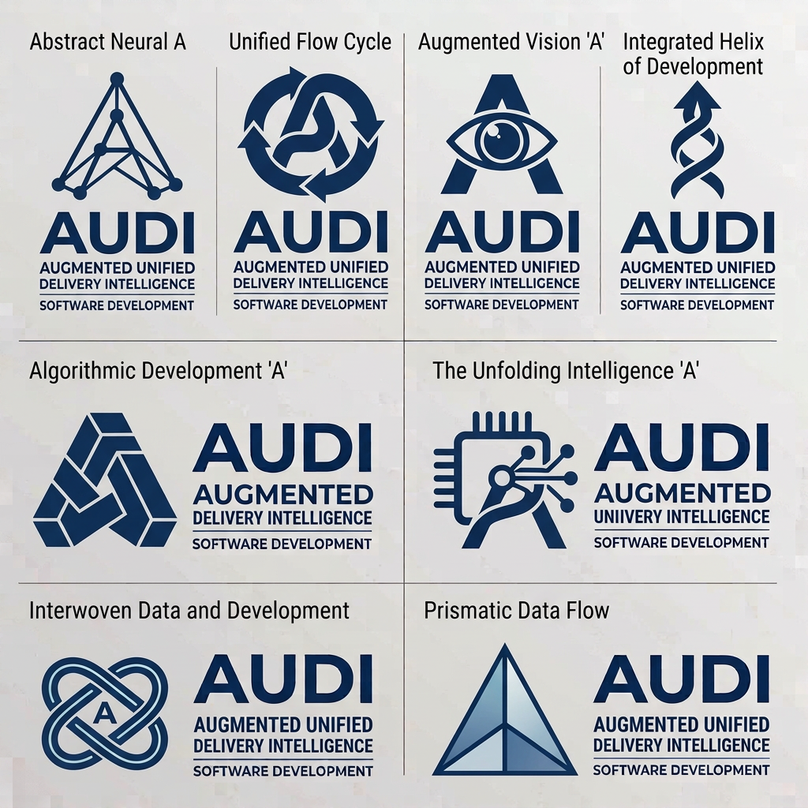

Eight logo ideas from the concept board, redrawn as clean vectors in the Bell blues so they can be compared with the other rounds and tested at favicon sizes. The original board is at the bottom of this page.
B3, Augmented Vision A. It is a clear A with one strong idea: an eye where the crossbar sits. It reads in a second, suits the Augmented and Intelligence in the name, and holds up at 16px. B8, Prismatic Flow, is the simplest silhouette if you want something calmer. B1, B4, B6 and B7 have fine detail that is lost in a browser tab, so they suit the dashboard header or print better than the favicon.
The board labels are shortened here to match the other rounds. The tagline on the board, "Augmented Unified Delivery Intelligence", is the one used in the lockups.
The original image, copied to assets/concept-boards/.
